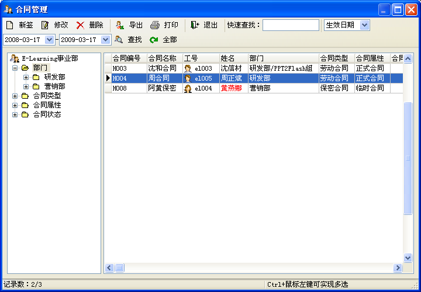

| 合同管理 - 合同信息 |
|
您可以通过菜单[合同管理]->[合同信息]对员工的信息进行管理，以及对数据进行导出Excel、查询等操作，界面如下图：  您可以在这里添加新的合同记录，对查询到的数据进行编辑删除、导出Excel、打印等操作，也可以对查询出来的数据进行快速查找操作，它支持 对合同编号、合同名称员工的工号、姓名及姓名对应拼音的模糊查询；你也可以点击左边的树列表，对合同数据进行分类查看。 在这里导出为Excel的合同数据，可以被导入操作所用。 此界面除了支持快速查找外，还支持对指定日期字段如签订日期、生效日期及终止日期进行区间段的查询；点击[全部]可查看所有的合同数据。 |